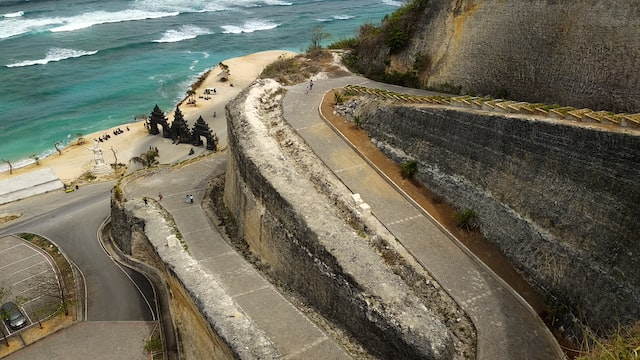
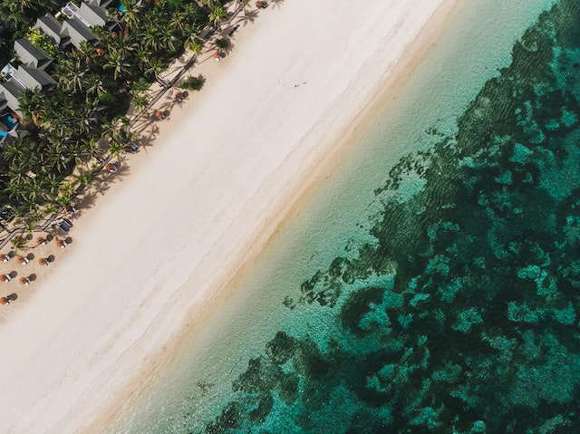
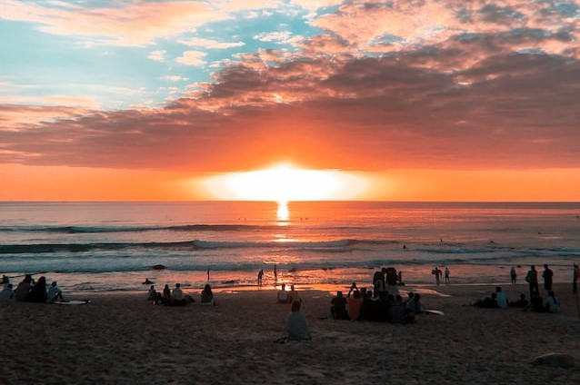
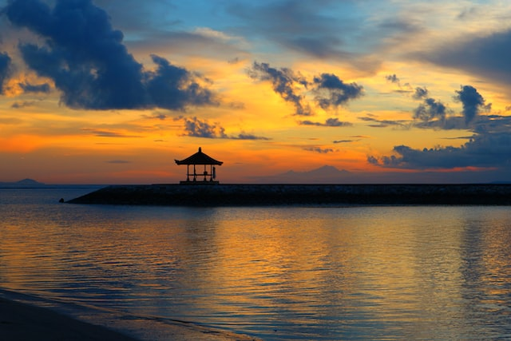

Menikmati Keindahan Alam Bali: 5 Pantai Terindah untuk Menikmati Senja yang Spektakuler
Indonesia merupakan salah satu negara dengan keindahan alam yang luar biasa, dan salah satu destinasi wisata paling populer adalah pantai-pantai yang menakjubkan. Salah satu pantai terbaik di Indonesia adalah yang terletak di pulau yang dikenal sebagai surga bagi wisatawan. Di pulau ini, wisatawan dapat menikmati pantai-pantai yang indah dan keindahan matahari terbenam yang menakjubkan. Dalam artikel ini, kami akan membahas 5 pantai terindah di pulau ini yang sempurna untuk menikmati senja yang spektakuler dan keindahan alam yang menakjubkan. Siapkah Anda mengeksplorasi pantai-pantai indah ini dan menikmati keindahan alam yang belum pernah Anda lihat sebelumnya?
#1. Pantai Tanah Lot

Pantai Tanah Lot adalah salah satu pantai terindah dan paling terkenal di Bali. Terletak di dekat pura Tanah Lot, pantai ini menawarkan pemandangan yang indah dengan bebatuan besar di tengah air laut dan indahnya matahari terbenam. Selain itu, wisatawan juga dapat menikmati suasana santai di pantai ini dan berjalan-jalan di sekitar pura Tanah Lot.
#2. Pantai Jimbaran

Pantai Jimbaran terkenal dengan pasir putih yang lembut dan air laut yang tenang. Pantai ini adalah tempat yang sempurna untuk menikmati makanan laut segar dengan latar belakang matahari terbenam yang menakjubkan. Selain itu, wisatawan juga dapat menikmati aktivitas air seperti berselancar atau menyewa kano untuk berkeliling di sekitar pantai.
#3. Pantai Nusa Dua

Pantai Nusa Dua adalah pantai yang sempurna untuk wisatawan yang mencari pantai yang tenang dan bersih. Dengan pemandangan laut yang jernih dan lembut, pantai ini merupakan tempat yang ideal untuk menyaksikan matahari terbenam sambil menikmati aktivitas air seperti berenang atau snorkeling.
#4. Pantai Kuta

Pantai Kuta adalah salah satu pantai terkenal di Bali yang terletak di pusat keramaian Kuta. Meskipun pantai ini seringkali dipenuhi oleh wisatawan, namun keindahan matahari terbenam di sini tetap menjadi atraksi yang menarik. Pantai Kuta juga menjadi lokasi yang populer untuk berselancar dan menikmati makanan di restoran-restoran tepi pantai.
#5. Pantai Sanur

Pantai Sanur adalah salah satu pantai yang paling cocok untuk menikmati senja yang indah dan menakjubkan. Pantai ini terkenal dengan keindahan matahari terbenam dan sejuknya angin laut yang menyejukkan. Selain itu, wisatawan juga dapat menikmati aktivitas air seperti berjalan-jalan di sepanjang pantai atau menaiki perahu nelayan tradisional.
Itulah 5 pantai terindah di Bali yang ideal untuk menikmati keindahan senja dan matahari terbenam. Dari pantai-pantai yang ramai seperti Kuta hingga pantai yang lebih tenang seperti Sanur dan Nusa Dua, Bali menawarkan berbagai pilihan pantai yang dapat memenuhi kebutuhan dan preferensi wisatawan yang berbeda-beda.
Jika Anda tertarik untuk menaikmati alam Bali, Bali Mutiara Tours menawarkan berbagai Paket Tour Bali yang dirancang khusus untuk memperkenalkan Anda pada berbagai destinasi wisata kekinian di Bali. Dengan pengalaman dan pengetahuan lokal yang luas, Bali Mutiara Tours akan membantu Anda menemukan pengalaman wisata yang sesuai dengan minat dan kebutuhan Anda. Jangan ragu untuk menghubungi Bali Mutiara Tours untuk informasi lebih lanjut mengenai paket tours dan jadwal kegiatan yang sesuai dengan waktu liburan Anda. Selamat menikmati pesona keindahan alam Bali!